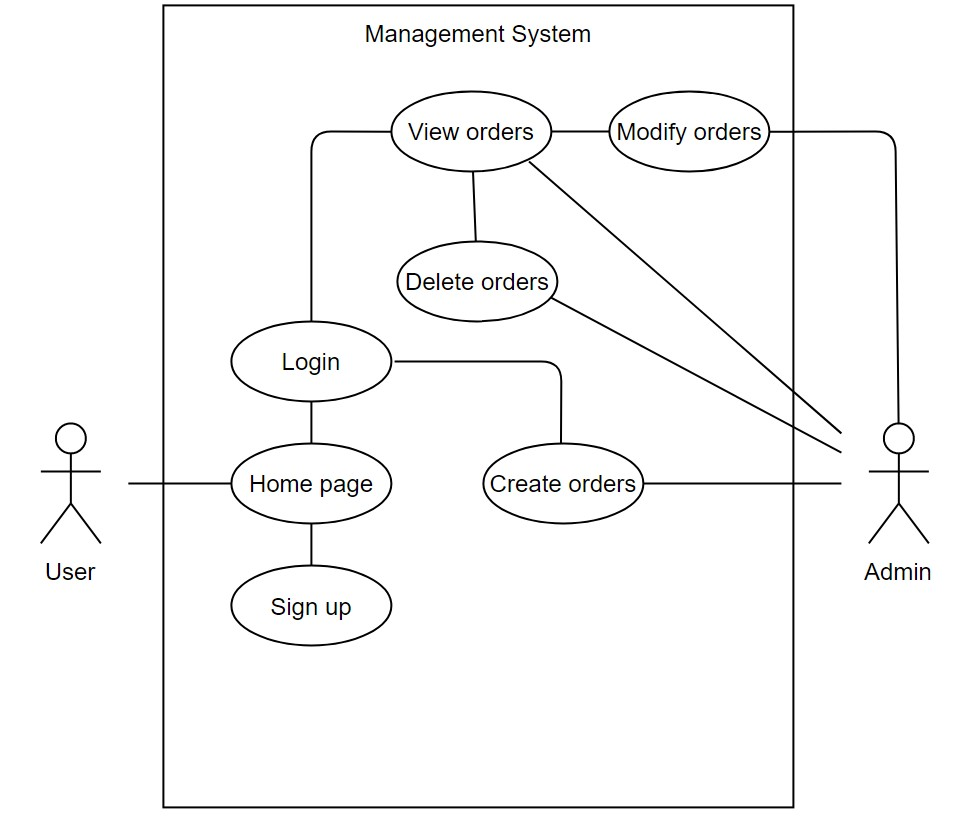
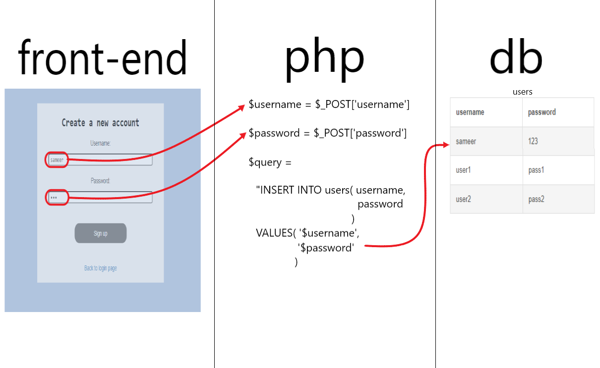

(rough)
Goal
The goal of this project was to create a system in which users could
organize order data, whether it be for personal or business use.
Target userbase
The target user for this system is someone who has transactions that they wish to keep track of.
The site was designed with this in mind, so there are various options for different types of orders to be stored.
How it works
-
Users are directed to a home screen through which they can choose to either log in or create a new account.
-
In order to create a new account, users must select a username and password, as well as verify their
password to ensure that no mistakes are made. New user data then gets saved to the system's database.
-
To login, users simply input their username and password which are then verified by the database,
allowing the user to login.
-
Once logged in, users are taken to their personal home page, where they can create new orders as well
as view and modify/delete previously created orders.
Below is a pictoral description of how the user can interact with the site.

Figure 1 - Use case diagram displaying admin and user interactions with the site
Languages used
This site uses
HTML/CSS,
Bootstrap and
Javascript for its front-end design.
HTML/CSS is used in conjunction with
Bootstrap in order to give the site a clean and modern look.
Javascript is used in order to allow the user to make SQL MODIFY and DELETE queries through the front-end using the
Tabledit JS library.
This allows users to modify/delete data within their transactions table.
A
MySQL database was also used to store data and allow users to access and modify their data through queries. SQL queries
are made in the back-end using
PHP.
The site was hosted as an
Amazon Elastic Compute Cloud (EC2) instance using
Amazon Web Services (AWS).
LAMP, packaged by
Bitnami for AWS Cloud, was
used to provide a quick-to-launch development environment.
The database capacity is up to 10GiB via an
Amazon Elastic Block Storage (EBS) volume which hosts the data, allowing for 1000s of data instances
to be stored and quickly accessed on the system.
How the database works
-
To login and display orders, SELECT queries are made in the database. JOIN is used to group all of a user's
orders together at once.
-
To register a user and modify orders, INSERT queries are made in the database.
-
To delete orders, DELETE queries are made in the database.

Figure 2 - How the front-end works with the back-end
Future plans
- Add section to calculate profits / debt for users
- Add more user options (home page customizability, profile pictures), increase user security (password reset, 2FA),
allow interaction between users (followers, groups, messaging), etc.
- Improve front-end design (site name, logo, better design)